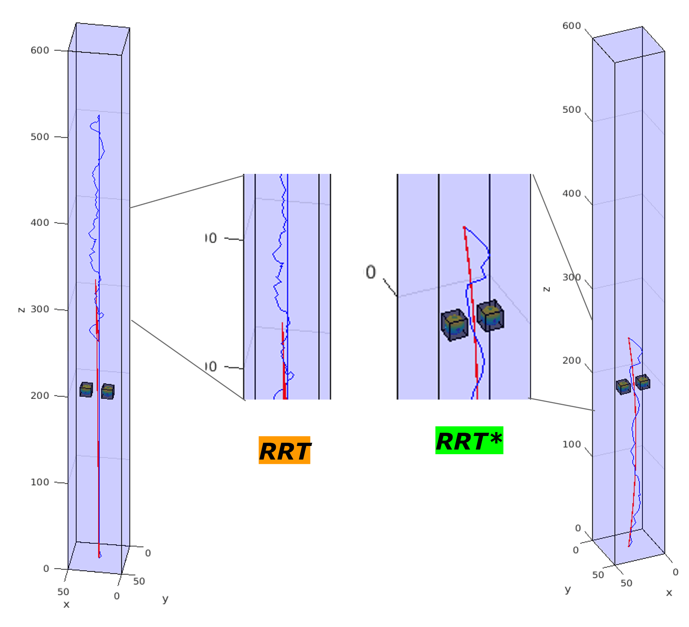
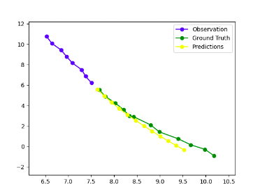

Developed an indoor autonomous mobile robot that moves around freely and detects obstacles blocking the exit, if any. Furthermore, the robot would notify the user about the obstacle and give out a score on how dangerous that obstacle could be in case of an emergency. The robot was able to successfully detect obstacles in the closest path to the exit and give out suitable risk scores, in a simulation of house floorplans.

A method for motion planning for a surgical needle robot. Through the use of a bicycle kinematic model and an RRT-based motion planning algorithm, the planner was able to generate paths for the robot to follow quickly and efficiently while adapting to obstacles as they are discovered. Even with this unique mode of motion, the method presented was capable of reliable motion planning for the needle.

The main target of this project is to create and train a model to be able to detect humans in crowded scenarios. YOLOv4 model has been used for this task and was trained on CrowdHuman dataset which was specifically created for this purpose. Initial EDA was performed on the data and then YOLOv4 model was trained on this dataset and the evaluation was done by looking at accuracy, training loss and mAP scores.

Comparing the performance of Long-Short terms memory and Transformer Architectures. Since, attention is the most important aspect for trajectory prediction, spatial and temporal context of trajectory are taken into account for making future predictions in interaction aware LSTM and Transformer architecture.We use mean average displacement and final average displacement as comparison metrics for architecture comparison.

The aim of this project is to identify and differentiate between the different instances of a class present in an image, namely execute instance segmentation. For this project, we have worked to perform instance segmentation on stuffed toys present in an image and specifically on the leprechaun plushie. The motivation for this is the fact that we received the leprechaun toy in the class to detect and identify. We try to solve this challenge using a traditional method as well as a state-of-the-art method using deep convolutional neural networks.

A quadcopter designed and build from ground up using Arduino Nano as main flight computer and MPU6050 sensor for IMU data and NRF24L01 sensors for RF communication.

The aim of this project was to implement and tune a sliding mode controller for a Crazyflie 2.0 nano quadrotor. The controller was implemented and the results were tested and simulated in MATLAB.